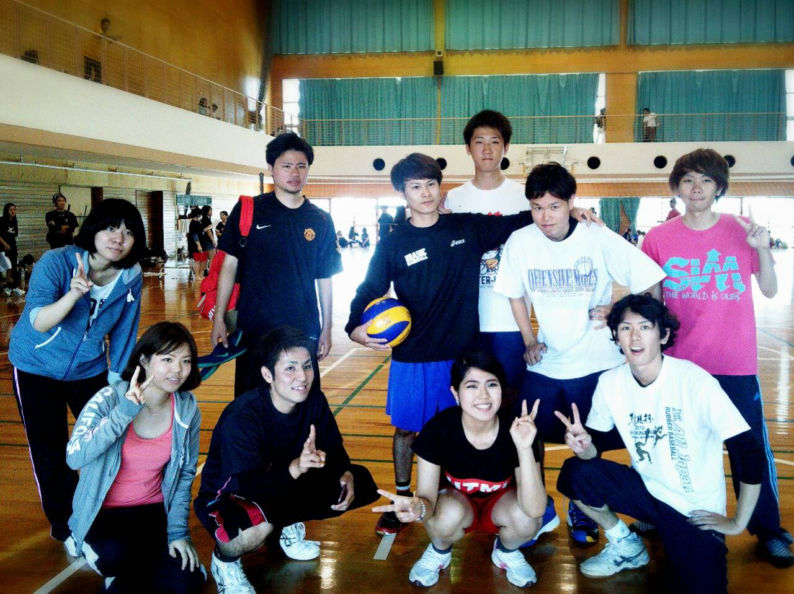

兪ゼミ
兪 炳強（ゆ へいきょう）教授
専門分野／地域資源経済論、開発経済論
担当科目／地位産業概論、産業情報分析ⅠⅡ、環境資源経済論ⅠⅡ、国際経済論
ゼミ紹介
ゼミのねらいは、沖縄の経済・産業が直面する諸問題・諸課題に関わる「データ・情報を科学する（知の発見）！」ことです。具体的には、「家計・消費者の意識と行動」、「経済のグローバル化と企業経営戦略」、「ITや地域資源の活用と地域の活性化戦略」などをテーマに、ゼミ学習や卒業研究を行います。
ゼミに入ってから卒業までの大まかな流れとして、2年次の専門演習基礎では「問題の発見力の習得」、３年次の専門演習ⅠⅡでは「分析力の習得、卒業論文の計画策定）、４年次の卒業論文演習ⅠⅡでは「就職活動支援、卒業論文の作成」となります。
卒業論文
平成２５年度卒業生
「携帯端末による情報利用の特徴に関する考察」
「人気音楽アルバムCDの特徴分析」
「スマートフォンおよびパソコンによるゲームソフトの開発とその手法に関する考察」
「沖縄における統合型観光リゾートの形成」
「沖縄の観光振興と バリアフリーへの対応」
「沖縄における大学生の職業選択行動とその要因」
「日本におけるコーヒーの消費分析」
「読谷山花織・ミンサーの販売拡大の方策」
「泡盛の販売促進に関する一考察」